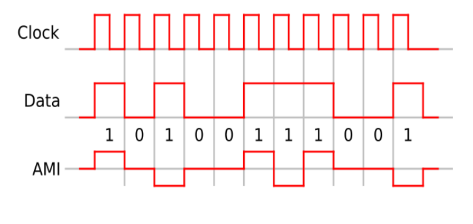
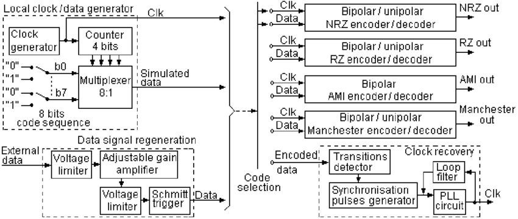

_preview_rev_1.png)
|
K.J. Somaiya Virtual Labs |

|
Experiment 1 - Data formats: NRZ-L, NRZ-S, RZ-L, RZ-S, AMI
Aim: -
To Observe different data formats: NRZ-L, NRZ-M,NRZ-S, RZ-L, RZ-S, AMIApparatus: -
Data Conditioning Kit (ACT07-T), Data Reconditioning Kit (ACT07-R), CRO, Patch chordsTheory: -
Non Return to Zero signal are the easiest formats that can be generated. These signals do not return zero with the clock. The frequency component associated with these signals are half that of the clock frequency. The following data formats come under this category:


- Non Return to Zero – Level – NRZ-L: This is the most extensively used waveform in digital logics. The data format is very simple where all ‘ones’ are represented by ‘high and all ‘zeros’ by lows’. The data format is directly got at the output of all digital data generation logics and hence very easy to generate. Here all the transitions take place at the rising edge of the clock.
- Non Return to Zero – Mark – NRZ-M: This waveform is extensively used in magnetic tape recording. In this data format, all ‘ones’ are marked by change in levels and all ‘zeros’ by no transitions. And all transitions take place at the rising edge of the clock.
- Non Return to Zero – Space – NRZ-S: This type of waveform is marked by change in levels for ‘szero’ and no transition for ‘one’ and the transitions take place at the rising edge of the clock. This format is also used in magnetic type recording.
- Biphase – Level (Manchester Coding): With the Biphase-L, ‘one’ is represented by a half bit wde pulse positioned during the first half of the bit interval and a ‘zero’ s represented by a half bit wide pulse positioned during the second half of the bit interval.
- Biphase – Mark Coding (Biphse-M): With the biphase-M, a transition occurs at the beginning of every bit interval. A ‘one’ is represented by a second transition, half bit later, whereas a zero has no second transition.
- Biphase – Space coding (Biphase-S): With a Biphase-S also a transion occurs at the beginning of every bit interval. A ‘zero’ is marked by a second transition, one half bit later, ‘one’ has no second transition.
Block Diagram: -

Procedure: -
- Connect the Power supply in proper polarity to the kit ACT-07T and ACT-07R and switch ON.
- Connect S-CLOCK and S-DATA generated on ACT-07T to CODING CLOCK and INPUT DATA respectively by means of the patch chords provided.
- Connect the coded data NRZ-L on ACT-07T to the corresponding DATA INPUT NRZ-L of the decoding logic on ACT-07R.
- Set the jumper for decoding logic.
- Observe the coded and decoded signal on the CRO.
- Connect the coded data NRZ-M and NRZ-S on ACT-07T to the corresponding DATA INPUT NRZ-M and NRZ-S respectively and observe the coded and decoded signal.
- Connect the coded data BIO-L and BIO-S on ACT-07T to the corresponding DATA INPUT BIO-M and BIO-S on ACT-37T respectively and observe the coded and decoded signal. Use RESET switch for clear data observation if necessary.